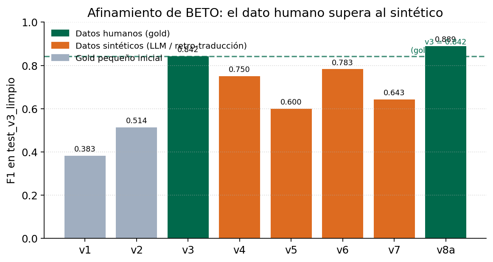
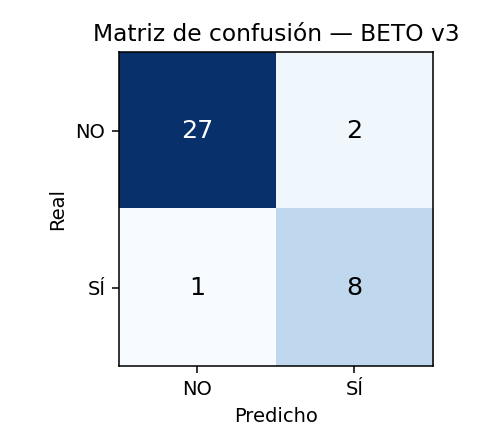
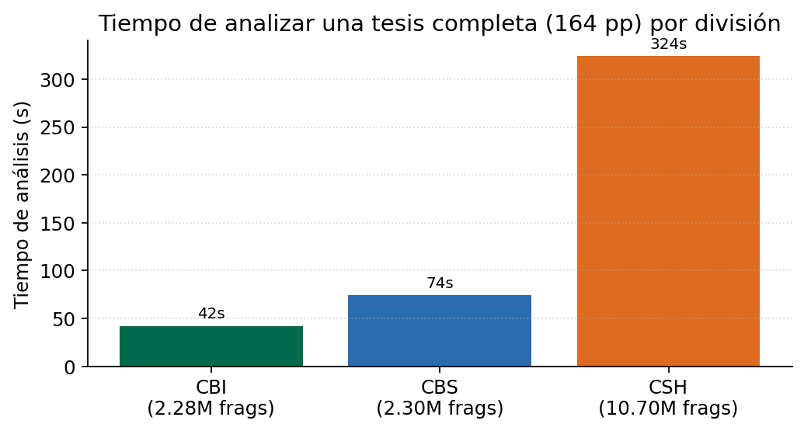
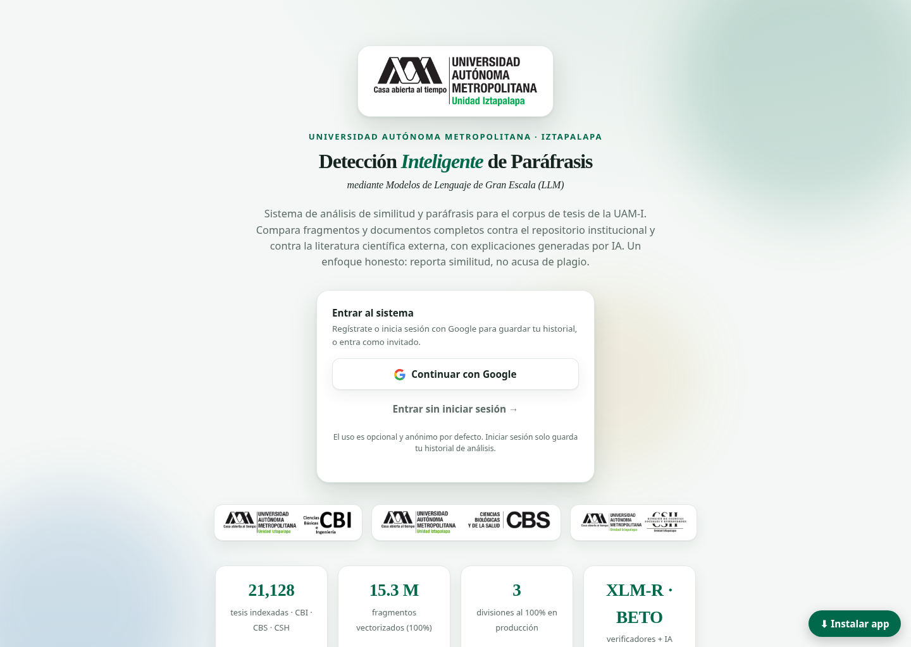
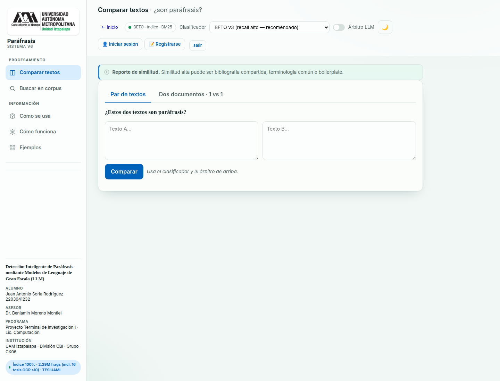
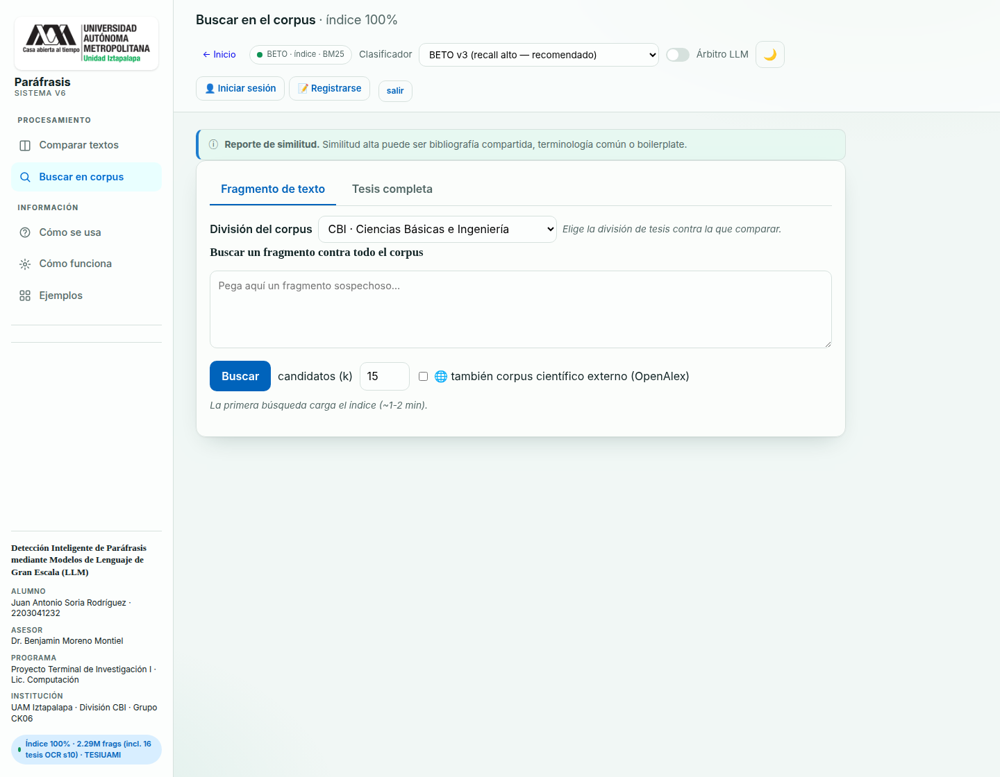
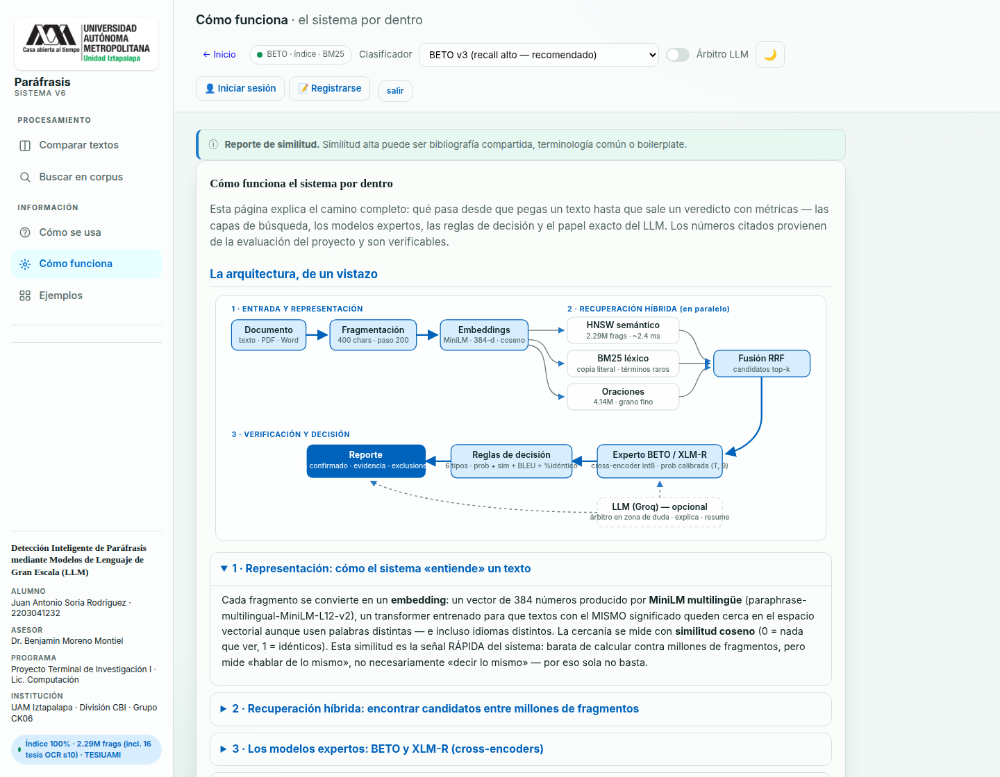
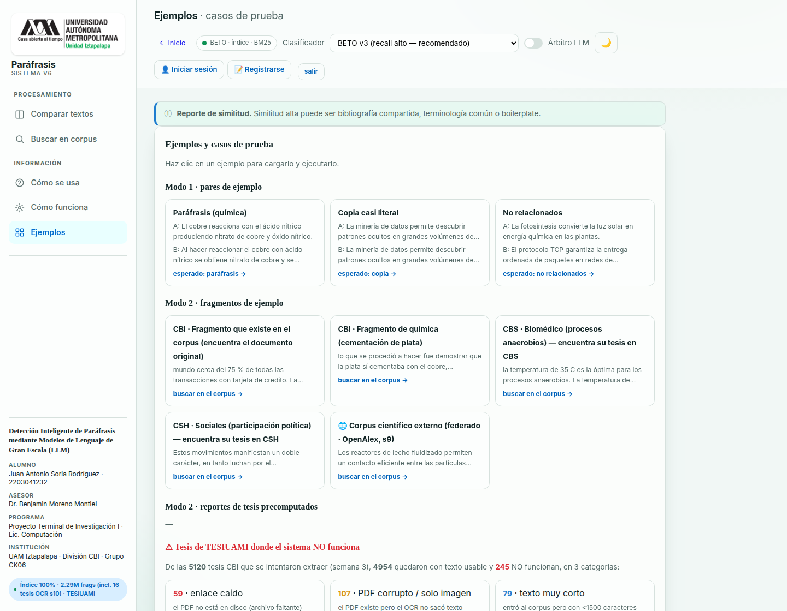

Detección Inteligente de Paráfrasis
Detector de paráfrasis y copia sobre el corpus de tesis TESIUAMI de la UAM Iztapalapa (las tres divisiones: CBI, CBS y CSH), con modelos de lenguaje afinados (BETO, XLM-RoBERTa), recuperación híbrida (HNSW + BM25 + RRF) y cross-encoders int8. Evaluado con un protocolo estadísticamente honesto y desplegado en producción.
Resumen
Este proyecto aborda la detección automática de paráfrasis y copia sobre el corpus de tesis TESIUAMI de la UAM Iztapalapa, empleando modelos de lenguaje de gran escala y modelos tipo Transformer afinados (BETO, XLM-RoBERTa), en contraste con el enfoque previo basado en redes convolucionales y embeddings estáticos de la tesis base de David Luna.
Se construyó un sistema de doble modo que (a) clasifica pares de textos como paráfrasis o no, y (b) analiza documentos completos contra un corpus interno de 21,128 tesis de las tres divisiones (CBI, CBS y CSH) y contra un corpus científico externo de ~250 millones de obras (OpenAlex, Semantic Scholar y Crossref). El sistema combina recuperación híbrida (semántica con HNSW, léxica con BM25 y fusión por RRF) con un cross-encoder cuantizado a int8, y se encuentra desplegado en producción.
Encuadre honesto y hallazgo central
El aporte metodológico principal es la evaluación honesta: toda métrica se reporta con su conjunto de prueba etiquetado y con intervalos de confianza, descartando cifras infladas por fuga de datos o balanceo artificial. Bajo ese encuadre, el mejor modelo afinado (BETO v3) alcanza F1 = 0.842, empatando —dentro del intervalo de confianza— con la línea base previa; el aporte no es superar esa cifra, sino la eficiencia de datos (lograrlo con decenas de pares anotados en lugar de cientos de miles). Dos hallazgos sostienen la tesis central, «el dato supera a la arquitectura»: los datos sintéticos degradan el desempeño, y una búsqueda exhaustiva muestra que el corpus es original —la copia parafraseada entre tesis es prácticamente nula—, por lo que la similitud temática no debe confundirse con plagio.
Arquitectura
El sistema se organiza en dos etapas complementarias que resuelven el compromiso entre velocidad y precisión: recuperar candidatos (rápido, con un bi-codificador) y clasificar solo esos pocos (preciso, con un codificador cruzado). Así el modelo caro se ejecuta pocas veces y el sistema escala al corpus completo.
Modos de Operación
- Modo 1 — Clasificación de pares: recibe dos textos y responde si uno es paráfrasis del otro, con etiqueta (copia casi literal, paráfrasis o alta similitud por revisar) y probabilidad calibrada.
- Modo 2 — Documento completo: analiza una tesis (texto o PDF) contra el corpus interno de la división elegida (CBI, CBS o CSH), por fragmento o por tesis completa, con opción de activar el corpus científico externo.
Corpus científico externo (federado)
Además del corpus interno, el sistema compara contra ~250 millones de obras consultando OpenAlex, Semantic Scholar y Crossref. Como operan en inglés, el fragmento se traduce (es → en) y la verificación se hace en-en, con descarga de texto completo en acceso abierto (con validaciones anti-SSRF) o comparación contra el abstract en obras cerradas.
Sistema por divisiones y despliegue
Cada división tiene sus propios índices, metadatos y modelo (CBI: 4,970 · CBS: 5,416 · CSH: 10,742 tesis). Como no caben las tres a la vez en memoria, se cargan de forma perezosa (solo la activa) y se evacúan al cambiar. El reporte titular cuenta solo lo confirmado por el clasificador: el boilerplate institucional y la bibliografía compartida se contabilizan aparte y no inflan la cifra. Despliegue en dos entornos: el canónico en Google Cloud (tres divisiones al 100%) y una demostración pública en Hugging Face Spaces.
Tecnologías
Resultados Clave
Empate con la línea base (intervalos de confianza al 95%)
Sobre el mismo conjunto (test_v3_limpio, 38 pares), el modelo contextual y las líneas base dan valores muy cercanos con IC95% ampliamente solapados: la diferencia no es estadísticamente significativa. El aporte no es superar la cifra, sino lograrla con órdenes de magnitud menos dato anotado.
| Sistema | F1 | IC95% (bootstrap) | Dato anotado |
|---|---|---|---|
| BETO v3 (contextual) | 0.842 | [0.609, 1.000] | decenas de pares humanos |
| TF-IDF + coseno | 0.842 | [0.600, 1.000] | — |
| FastText + coseno | 0.818 | [0.588, 0.960] | cientos de miles |
Desempeño por conjunto de prueba
Cada columna es un conjunto distinto y de dificultad creciente; los valores no son comparables entre columnas. La F1 baja hacia los conjuntos más realistas mientras el AUROC se mantiene: es un test más difícil, no un peor modelo.
| Modelo | test_v3_limpio (38, fácil) | test_v4 (109, robusto) | test_v5 (225, realista) |
|---|---|---|---|
| BETO v3 | 0.842 / 0.989 | — | 0.714 / 0.836 |
| XLM-R v4 | 0.941 (ref.) | 0.812 / 0.839 | 0.677 / 0.810 |
| Ensamble | 0.889 / 0.996 | — | 0.670 / 0.837 |
Formato: F1 / AUROC. El titular honesto de XLM-R es el de test_v4.



Conclusiones Experimentales
- El dato supera a la arquitectura: a esta escala, el dato humano de calidad pesa más que el modelo o su especialización por dominio (que no aportó mejora significativa).
- Los sintéticos degradan: ninguna ampliación por LLM ni por retro-traducción supera al gold humano; varias lo empeoran por sesgo de distribución.
- Eficiencia de datos: decenas de pares humanos igualan a la línea base con cientos de miles de pares algorítmicos.
- El corpus es original: la búsqueda exhaustiva no halló plagio parafraseado; ~58% boilerplate, ~21% bibliografía compartida y solo ~3% paráfrasis real entre candidatos.
- Honestidad estadística: cada afirmación (empate, no-mejora, degradación) se sostiene con intervalos de confianza al 95%.
El sistema desplegado
Interfaz del detector en producción: los dos modos de uso, la selección de división y clasificador, el corpus científico externo y el reporte estilo «informe de similitud».





Documento Final
El reporte final del Proyecto Terminal de Investigación I: planteamiento, estado del arte, metodología, diseño e implementación, evaluación honesta con intervalos de confianza y despliegue del sistema. Ábrelo en el visor o descárgalo en PDF.
Enlaces
Prueba el detector en el demo público, explora el sistema completo desplegado o descarga el documento final.